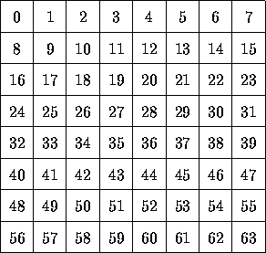
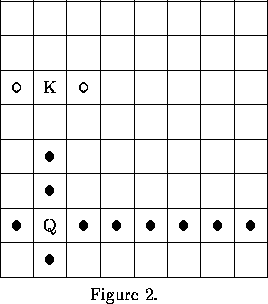
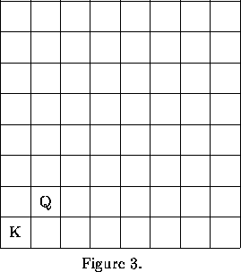

| Correct Move |
We have a square board with 64 places, numbered from 0 to 63, see Figure 1. There are two pieces: A king and a queen. The pair of king's place and queen's place is called the state. A state is legal if the pieces are not at the same place. The king and queen move alternatingly. The king can move one step in a horizontal or vertical direction, as long as it does not arrive at the place of the queen. The queen can move one ore more steps in a horizontal or vertical direction, as long as it does not encounter the king. All these moves are called legal. Please note that the pieces may not move diagonally.

Figure 1.
For example, suppose we have a state with a king at place 17 and a queen at place 49, as in Figure 2. The legal moves of the king are to places 9, 16, 18, and 25 and the queen can legally move to place 25, 33, 41, 48, 50, 51, 52, 53, 54, 55, or 57. We impose, however, an extra restriction: A piece may not move to a place where the other one can also move to. Legal moves satisfying this restriction are called allowed. In Figure 2, all possible places the king and the queen can move to by an allowed move, are denoted with a circle ( ) and a dot ( ), respectively. In Figure 3, the king cannot move, it is locked in.
 \ 
This problem requires you to write a program that does some checking related to the movement of the queen.
The input for your program resides in a textfile that ends with the standard end-of-file marker. Each line ends with the standard end-of-line marker and contains a sequence of three integers in the range O..63, separated by one space. The first two integers denote the place of the king and the queen, respectively. Together they form a state. The third integer denotes a new place for the queen. You may think of it as computed by some function movequeen. Your program determines whether:
Furthermore, if these requirements are met, your program determines whether the move of the queen results in a state where the king is locked in.
The output is also a textflle. For each input line, your program produces one output line with one of the following messages:
`Illegal state' indicates that the given state is not legal, i.e. the pieces are at the same place.
`Illegal move' means that the given state is legal, but the queen's move is illegal.
`Move not allowed' applies if both the given state and the queen's move are legal, but the queen's move is not allowed.
Both `Continue' and `Stop' mean that the given state is legal and the queen's move is allowed. If the king can do an allowed move in the resulting state, the message is `Continue', otherwise the king is locked in and you reply `Stop'.
17 17 49 17 49 56 17 49 9 17 49 17 17 49 25 17 49 33 17 49 41 17 49 49 56 48 49
Illegal state Illegal move Illegal move Illegal move Move not allowed Continue Continue Illegal move Stop